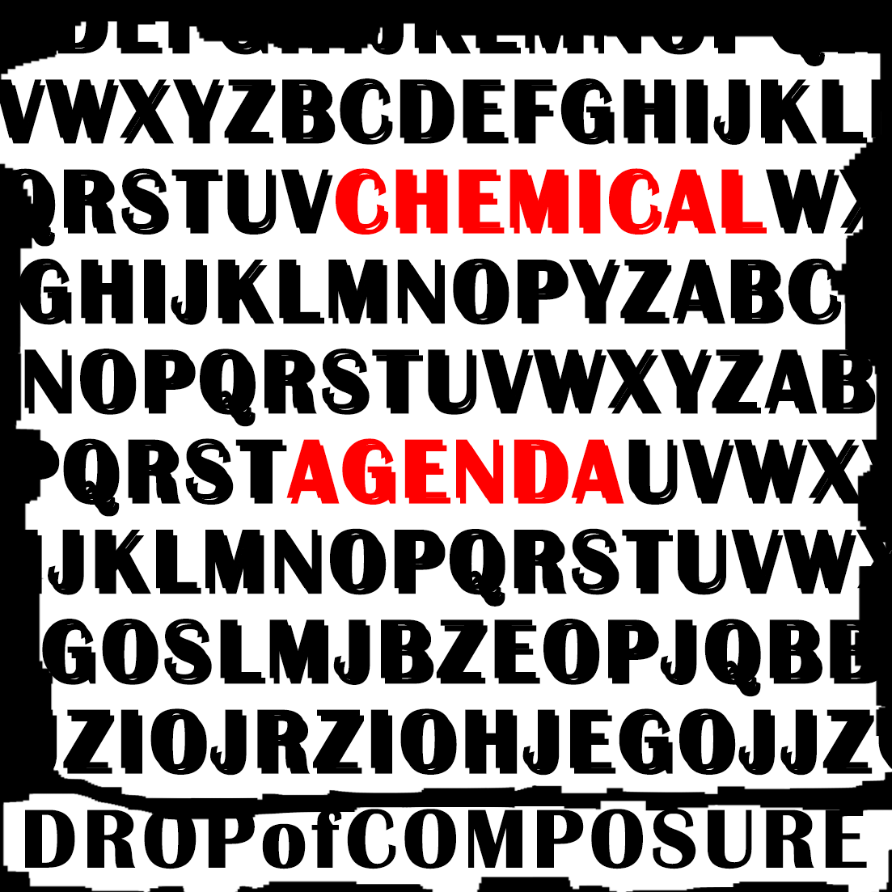

Welkom op de artiestenpagina! Hier kan je meer informatie vinden over de artiesten die Terro Records representeert!
De naam groep Infant Scream werd opgericht door Kevin Sandré en Mark Dielen. Kevin geboren in 1990 Oregon – Amerika verhuisde met zijn familie naar Deinze - België, waar Kevin en zijn broers en zussen naar school gingen en hun vader als Burgerlijk Ingenieur te werk ging. Kevin ging naar de Stedelijke Academie voor Muziek, Woord en Dans om er lessen te volgen als drummer, daar ontmoette hij Mark een 2de graad student gitaar. Mark is geboren en getogen in Deinze (1987), hij woont er met zijn moeder en jongere zus. Al van kleinst af aan was Mark gepassioneerd door muziek, meer bepaald PunkRock. Samen besloten Kevin en Mark een Punkband op te starten met de naam “Infant Scream”. De naam Infant Scream is gekozen omwille van de betekenis, een kind dat schreeuwt en krijst trekt de aandacht naar zich toe, en dit willen ze ook bereiken zoveel mogelijk aandacht om te bewijzen dat ze niet zoals het gewone volk meelopen met de samenleving. De teksten worden voornamelijk geschreven door Kevin, waarbij Mark een beetje helpt. Ze schrijven vooral over de oneerlijkheid van de samenleving en hun gevoelens daarbij.


Paradise Square is een Belgische old school punk band. De drie leden wonen allemaal in Antwerpen. De band bestaat uit Rob Lanen (gitaar en zang), Paul Belfor (drum) en Rik Luyten (zang en gitaar).Rob en Rik zijn al van kleins af aan hartsvrienden en waren altijd al grote fans van het old school punk genre. In hun vrije tijd waren ze enorm vaak bezig met muziek. Ze wilden samen een band starten en gingen dus op zoek naar een drummer. Zo kwamen ze bij Paul Belfor terecht en werd Paradise Square gesticht.
Always Left is een meidengroep die de kracht van de vrouwen wilt laten zien. De vier meiden hebben elkaar leren kennen op school en op de muziek school, waar ze daar hun band hebben opgericht. Omdat ze zo snel goeie vrienden zijn geworden, zitten ze altijd opn één lijn en weten ze welke richting de band moet aan nemen. Evie is de leadzangeres, die met haar krachtige stem iedereen omver kan blazen. Sofia speelt de gitaar en is altijd naast Spencer, de basiste, te vinden op het podium. Als laatste maar niet te missen is Lucy, zij zit achter de drums en is een genie met de drumstokjes. Samen hebben ze gekozen voor de naam Always Left, om zo hun eigenzinnige kant te laten zien. Omdat er vaak wordt gezegt dan vrouwen altijd gelijk hebben, kozen ze om letterlijk een andere richting te gaan om te laten zien dat het op andere manieren ook kan.


Drop of Composure is een Vlaamse punkgroep bestaande uit vier leden: zanger Kasper Dirckx (28), drummer Olivier Hermans (26), gitarist Filip Van Moren (30) en basgitarist Theo Raessens (28). De vier leerden elkaar kennen tijdens hun studies aan de hogeschool. Hun gedeelde passie voor muziek en de punkcultuur gaf hen het idee een bandje op te starten in 2005 om mee te doen aan lokale wedstrijden. De band groeide in populariteit en dus besloten ze hun studies te laten vallen om hun muzikale carrière te achtervolgen. ‘Drop of Composure’ heeft meerdere betekenissen, het verwijst naar oftewel het laten vallen van je kalmte of het hebben van een beetje kalmte. De balans die hier uit voort komt, verwijst volgens de bandleden naar het evenwicht in de punkmuziek, die agressieve boodschappen kan brengen op een gecontroleerde manier door middel van muziek. De inhoud van Drop of Composure’s muziek is dan ook politiek geladen.
